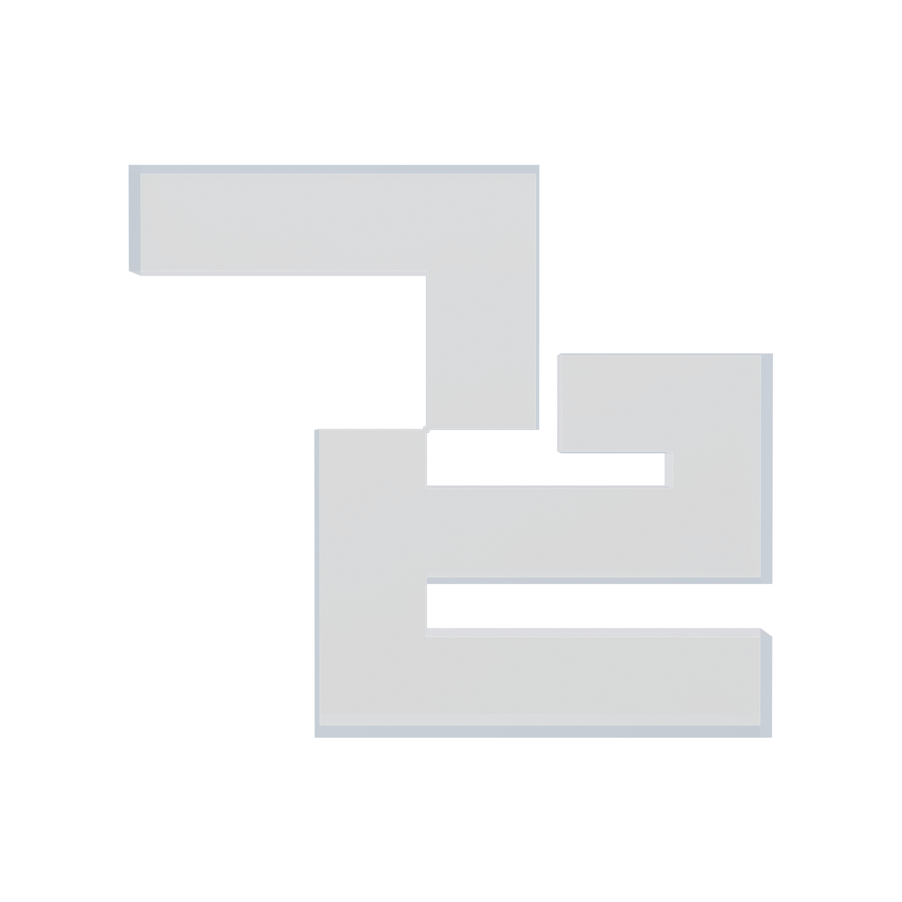

GYEOLLAK
결락
01
DESCENT
✦
FILM
02
OBJECTS
03
MEMBERS
04
LISTEN
05
PLAY
◇
LOGO
SIDE A
GYEOLLAK 결락
01
SURFACE
SILVER / #F3F6FA
SPEC
CLEAR SERIES · N26.11
MAT.
H₂O · ACRYLIC · CHROME
ACCENT
#174BFF

GYEOLLAK
缺落 · 결락
TOUCH
Same music, different weather.
SCROLL